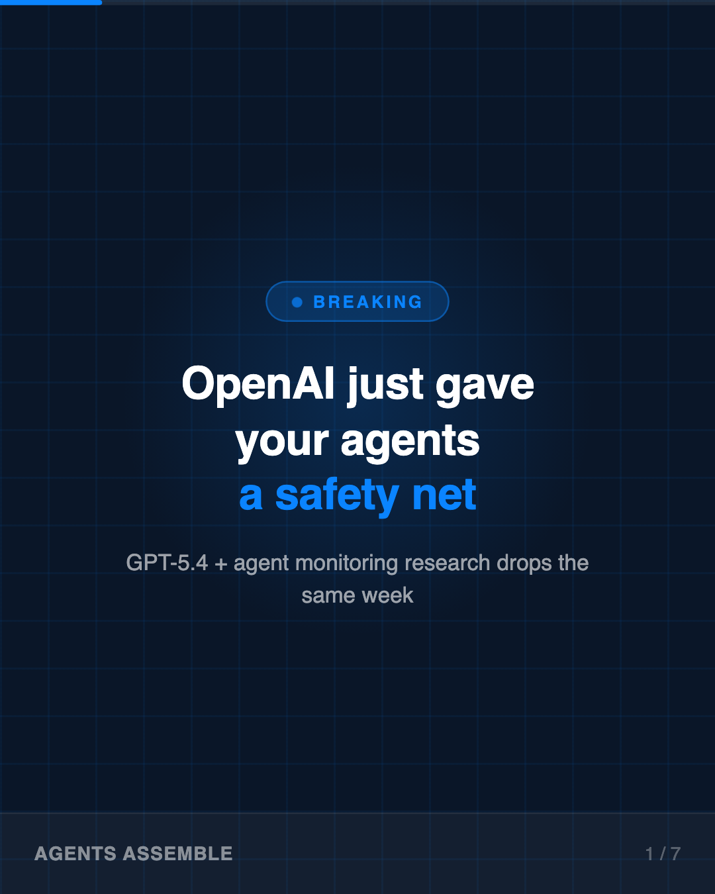
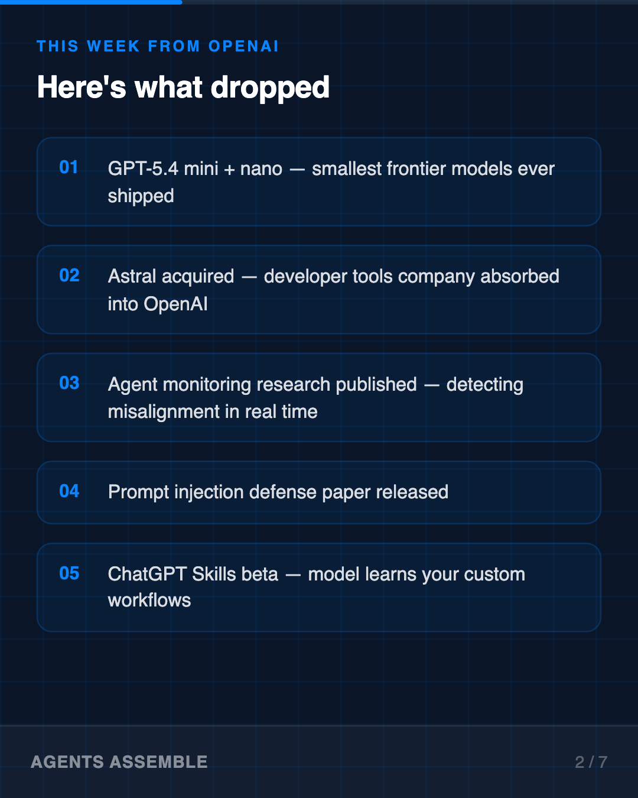
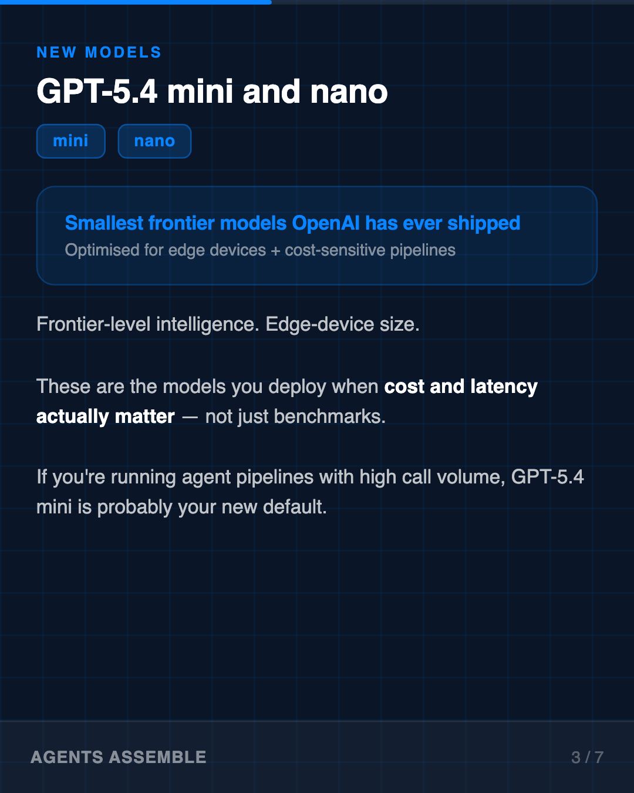
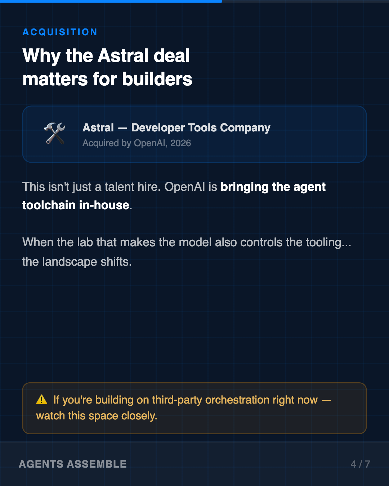
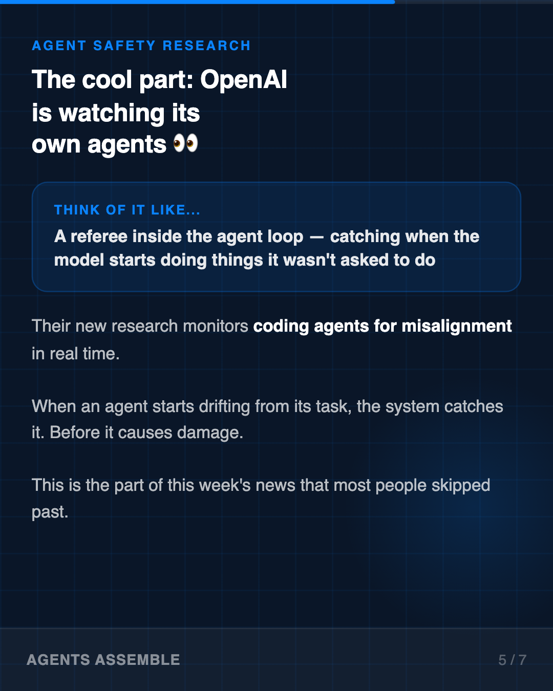
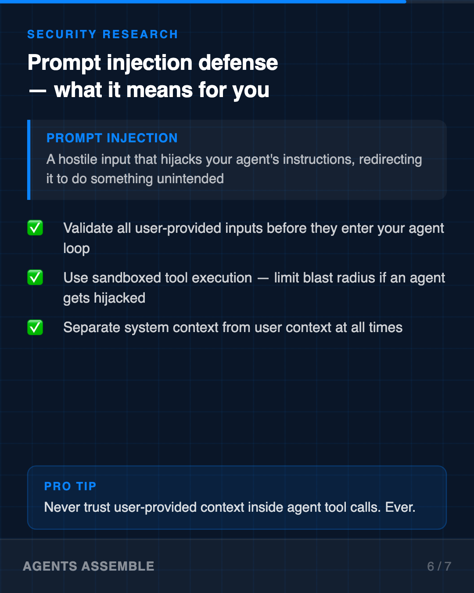
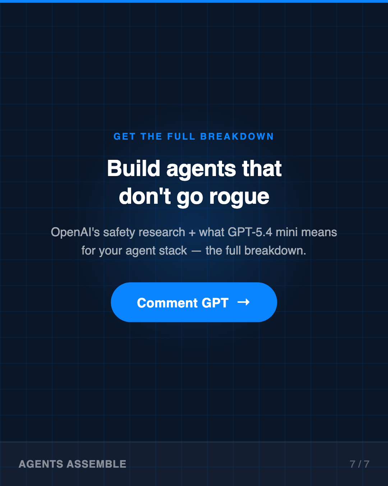

Key Takeaways
01
Here's what dropped this week — ['GPT-5.4 mini + nano — smallest frontier models ever', 'Astral acquisition — developer tools company', 'Agent monitoring research published', 'Prompt injection defense paper released', 'ChatGPT Skills — learns your custom workflows']
02
GPT-5.4 mini and nano — Frontier-level intelligence. Edge-device size. These are the models you deploy when cost and latency actually matter — n
03
Why the Astral acquisition matters — Astral builds developer tools. OpenAI buying them isn't just a hire — it's a signal: the agent toolchain is coming in-ho
04
The cool part: OpenAI is watching its own agents — Their new research monitors coding agents for misalignment. Think of it like a referee inside the agent loop — catching
05
Prompt injection defense — what it means for you — Prompt injection = a hostile input that hijacks your agent's instructions. OpenAI published defense research. The takeaw
Analysis
OpenAI had a significant week for anyone building with AI agents. Here's what actually matters:
GPT-5.4 mini + nano — frontier-class intelligence at edge-device scale. If you're running cost-sensitive pipelines, this is your new default.
Astral acquisition — a developer tools company absorbed into OpenAI. The agent toolchain is consolidating. Third-party orchestration risk just increased.
Agent monitoring research — OpenAI published a system for detecting coding agent misalignment in real time. A model watching itself for drift. This is the most underreported part of this week's news.
Prompt injection defense — documented attack vectors, documented defenses. If you haven't audited your agent's input validation, now is the time.
The pattern here isn't "OpenAI dropped cool features." It's "OpenAI is taking agent safety seriously enough to publish the research."
What's your current approach to agent safety in production? Drop it in the comments — I'm curious what teams are actually implementing vs. planning.
GPT-5.4 mini + nano — frontier-class intelligence at edge-device scale. If you're running cost-sensitive pipelines, this is your new default.
Astral acquisition — a developer tools company absorbed into OpenAI. The agent toolchain is consolidating. Third-party orchestration risk just increased.
Agent monitoring research — OpenAI published a system for detecting coding agent misalignment in real time. A model watching itself for drift. This is the most underreported part of this week's news.
Prompt injection defense — documented attack vectors, documented defenses. If you haven't audited your agent's input validation, now is the time.
The pattern here isn't "OpenAI dropped cool features." It's "OpenAI is taking agent safety seriously enough to publish the research."
What's your current approach to agent safety in production? Drop it in the comments — I'm curious what teams are actually implementing vs. planning.
Visual Breakdown






